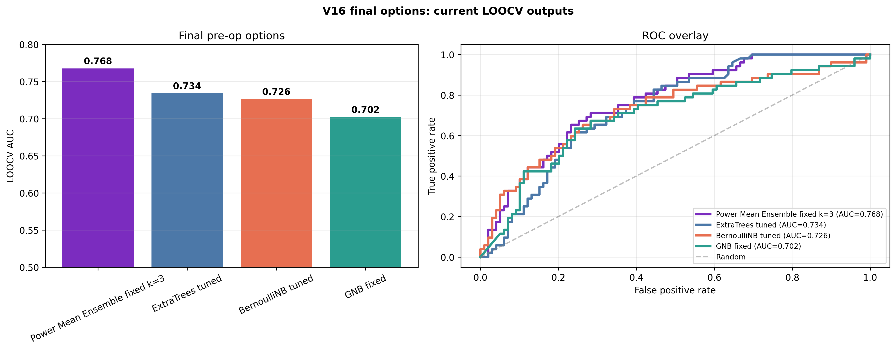
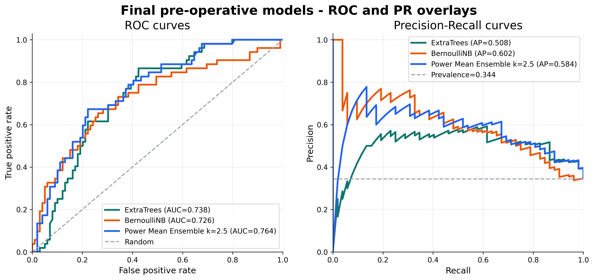
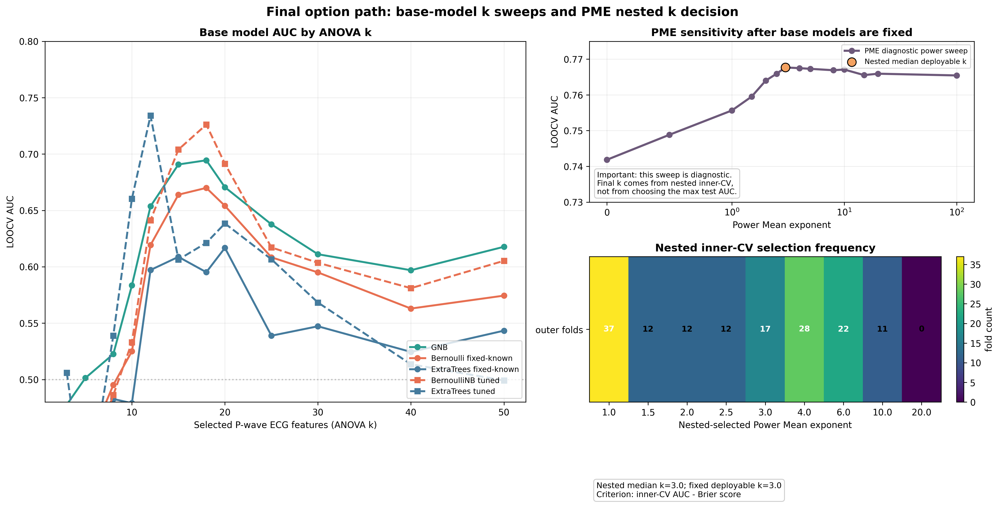
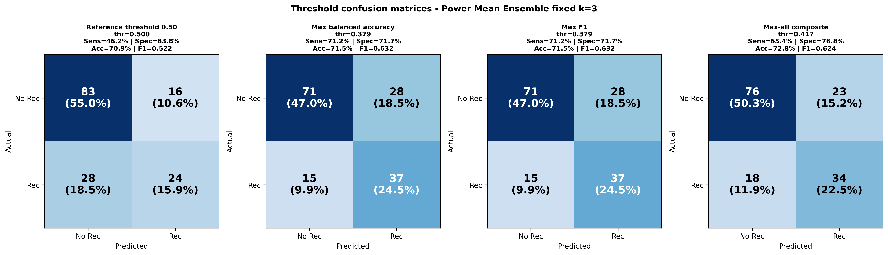
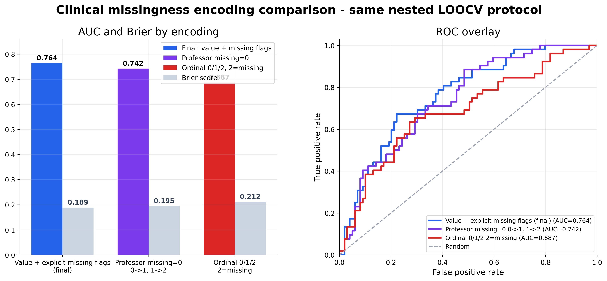
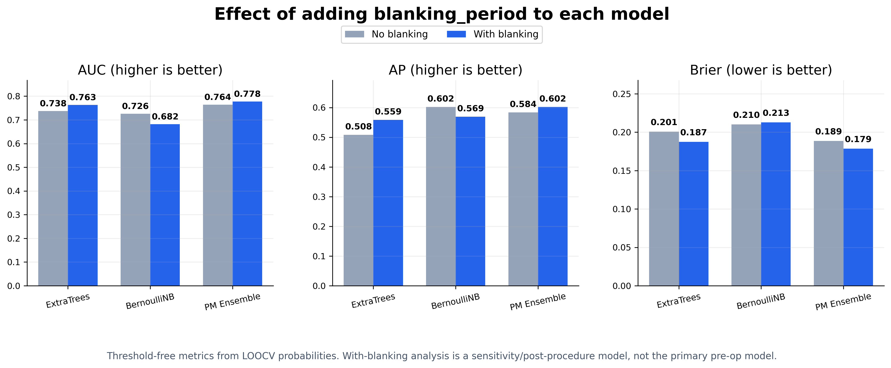

Modelo base
ExtraTrees
AUC
0.734
Brier
0.201
Sens
61.5%
Spec
75.8%
Threshold operacional 0.469 por critério max-all composite. Neste ponto: 75 TN, 24 FP, 20 FN e 32 TP.
Acompanhamento do desenvolvimento do modelo preditivo para Fibrilhação Auricular. Foco na eliminação rigorosa de viés e na descoberta do verdadeiro sinal ECG-Only.
Prever recorrência de Fibrilhação Auricular com variáveis pré-operatórias: assinaturas da onda P no ECG de superfície, type_af e redo.
Blanking period e escolhas pós-hoc podiam inflacionar resultados. A versão principal exclui blanking e separa claramente validação final de análises exploratórias.
O modelo final combina ExtraTrees e BernoulliNB por Power Mean. A versão final da pasta ML v16 6 atinge AUC 0.7677 e Brier 0.1888, com validação LOOCV, sem blanking period e com threshold operacional reportado à parte.
O score final combina as probabilidades dos dois modelos base. A avaliação principal é pré-operatória e não usa blanking period.
Threshold operacional 0.469 por critério max-all composite. Neste ponto: 75 TN, 24 FP, 20 FN e 32 TP.
Threshold operacional 0.295 por análise max-all. A AUC mantém-se 0.726; o corte só altera sensibilidade, especificidade e F1.
Power Mean k=3, threshold operacional 0.417 por max-all composite. Neste ponto: 76 TN, 23 FP, 18 FN e 34 TP.
A família Power Mean aproxima-se da média geométrica para valores baixos de k e do maximum para valores altos. Na pasta ML v16 6, o modelo final usa k=3, atingindo AUC 0.7677 sem blanking period.
| Modelo | AUC | AP | Brier | Sens | Spec | F1 |
|---|---|---|---|---|---|---|
| ExtraTrees (thr 0.469) | 0.7341 | 0.5098 | 0.2012 | 61.5% | 75.8% | 59.3% |
| BernoulliNB (thr 0.295) | 0.7261 | 0.6018 | 0.2102 | 65.4% | 73.7% | 60.7% |
| PM Ensemble k=3 (thr 0.417) | 0.7677 | 0.5868 | 0.1888 | 65.4% | 76.8% | 62.4% |
Figuras geradas a partir dos outputs finais: comparação de modelos, curvas ROC/PR, sweep do k, matriz de confusão, missingness e análise de blanking como sensibilidade.






A variável blanking_period é reportada apenas como sensibilidade. O modelo final é pré-operatório.
AUC e Brier são calculados nas probabilidades LOOCV. O threshold é apenas o ponto operacional escolhido para transformar score em classe.
Demonstração de investigação. Não validado para decisão clínica autónoma.
| Versão | Configuração | Raciocínio & Intervenção | AUC | Status |
|---|---|---|---|---|
V16 baseline 151 pacientes |
P-wave ECG + clinical pre-op 380 features candidatas |
Base limpa com ECG de superfície, type_af e redo. Blanking period separado para não contaminar o cenário pré-operatório. | 0.726 | Bernoulli |
ExtraTrees thr 0.469 |
Árvores extra-randomizadas Sem blanking |
Modelo base com threshold max-all. AUC 0.7341, sensibilidade 61.5%, especificidade 75.8%, F1 59.3%. | 0.734 | Base model |
Power Mean k=3, thr 0.417 |
ET + BernoulliNB Sem blanking |
Modelo principal da pasta ML v16 6: AUC 0.7677, Brier 0.1888, sensibilidade 65.4%, especificidade 76.8%, F1 62.4%. | 0.768 | Final |
k sweep sensibilidade |
Threshold sweep Max-all composite |
O threshold 0.417 não altera AUC; define o ponto operacional: 34 TP, 18 FN, 76 TN e 23 FP, com accuracy 72.8%. | 0.417 | Operacional |
Controlos missingness / blanking |
Ablations Sem usar no principal |
Missingness 0/1 + flags explícitas ficou melhor que ordinal 0/1/2. Blanking melhora AUC em análise secundária, mas fica fora do modelo principal por rigor temporal. | audit | Honestidade |
A ciência avança com transparência.
Descarregar Relatório CompletoUma área separada para preservar a página principal intacta e, ao mesmo tempo, deixar acessíveis as versões, figuras e outputs de suporte.
ECG-only pré-operatório, sem blanking period, com ExtraTrees + BernoulliNB e fusão Power Mean.
Comparações entre flags explícitas, codificação ordinal, thresholds fixos e thresholds fold-specific.
Resultados reportados para transparência, mantendo o modelo final alinhado com o cenário pré-operatório.
Uma página separada para explicar a evolução, experiências rejeitadas, controlos e decisões metodológicas.
| Bloco | Conteúdo | Uso na defesa |
|---|---|---|
| results | Modelos, curvas, thresholds, validação e controlos técnicos | Evidência principal e suplementar |
| results_comp_modelos | Comparações de modelos, parâmetros, sweeps e opções finais | Justificação da escolha final |
A carregar outputs deduplicados...
Secção curta e estável para apontar o QR do poster: reúne o modelo final, os outputs principais, o relatório e a rastreabilidade metodológica.
ExtraTrees + BernoulliNB, Power Mean k=3, threshold operacional 0.417.
ROC/PR, comparação final, matriz de confusão, missingness e blanking sensitivity.
Galeria deduplicada dos outputs úteis, organizada por pasta de resultados.
Documento de apoio com decisão final e material metodológico.
Histórico e versão web do projeto para colaboração e recuperação de alterações.
Usa o URL público com a âncora #referencias para abrir diretamente esta secção.
Artigos fornecidos para contextualizar a previsão de recorrência de fibrilhação auricular, ECG/P-wave e modelos preditivos.